Motivation
Graphs provide a data structure for knowledge representation and are useful for the description of relationships in all kinds of knowledge domains, including biological systems.
Knowledge graphs (KG) allow for the representation of knowledge through a logical description of its concepts, including of biological entities. By combining biological data with the relevant biological knowledge available, we’ll be bringing knowledge graphs into data mining tasks, and creating an opportunity for ML models to learn from the enriched graph data.
Objectives
This work aims to improve representation learning-based graph mining over PPI networks by enriching the graph with meaningful knowledge pertaining to its proteins, through:
- Investigation of different approaches to integrate the Gene Ontology with PPI networks and combine it with different deep learning pipelines.
- Comparison and evaluation of the different combinations in benchmark data.
Methodology
Datasets
Open Graph Benchmark Project’s PPI Networks (Ogbn-proteins and Ogbl-ppa);

Data Mining Tasks
- Ogbn-proteins - multi-label classification, where labels represent protein functional classes;
- Ogbl-ppa - PPI prediction problem.
Ontology and annotations retrieved from the Gene Ontology and String websites;

Methodology Steps
- Enrich the datasets with the ontology and annotations between its terms and the dataset’s proteins;
- Investigate graph/machine learning methods that are able to explore the added information;
Three DL methods used so far: 1) simple MLP; 2) MLP with node2vec node embedding; and 3) Graph Convolutional Network (GCN).
A simple MultiLayer Perceptor (1)
A MultiLayer Perceptor with Node2Vec embeddings (2)
A Graph Convolutional Network (3)
Preliminary Results
Future Work
- In the near future these implementations will be adapted into the protein-protein interaction prediction problem.
- Furthermore, the selection of machine learning pipelines evaluated will be expanded into more complex learning models and diverse approaches will be explored to filtering the ontology data being injected into the PPI networks.
Authors

Laura Balbi
LASIGE, Faculdade de Ciências
Catia Pesquita
LASIGE, Faculdade de CiênciasFunding
This work was supported by FCT through the LASIGE Research Unit (UIDB/00408/2020 and UIDP/00408/2020).